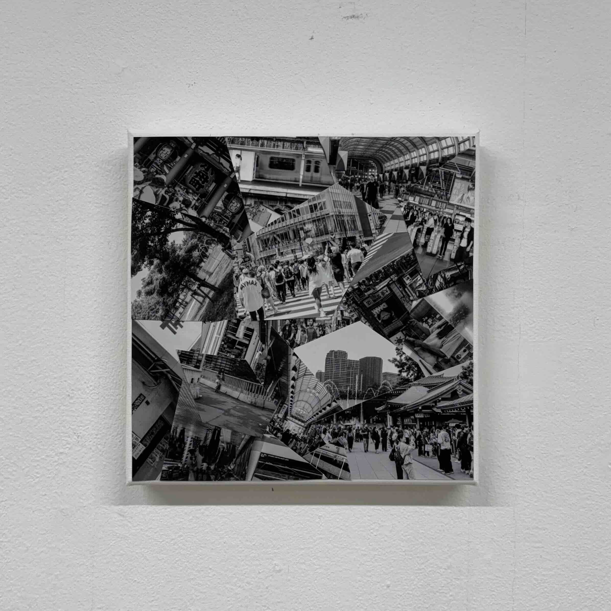
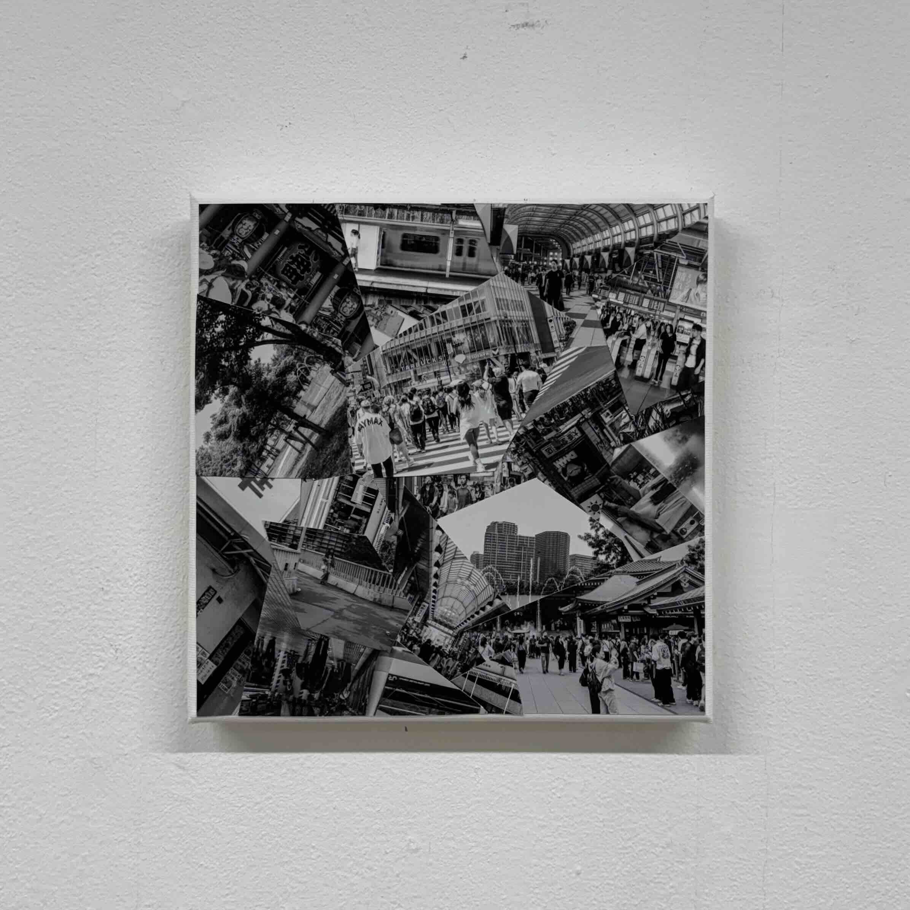
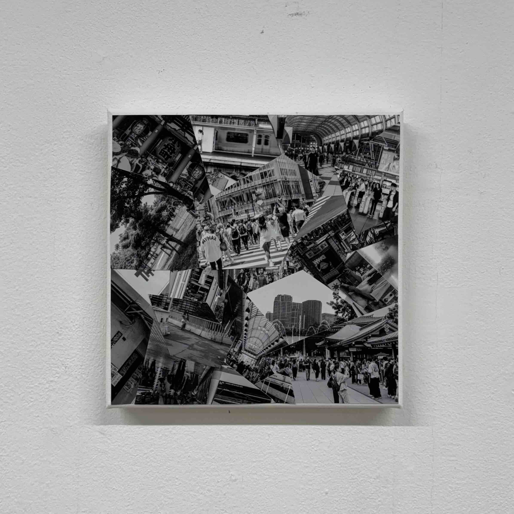

Otoato シリーズ
 


Mix Media
2025
日常や旅先の風景を再構築するメディア・アート作品。キャンバス上のコラージュ写真にスマホをかざすと、ARによってその場所の音が重なり合う。
天気や時間によって変化する楽曲が、鑑賞者の生活空間と作品を接続し、日常認識の変化を探る。

Mix Media
2025
日常や旅先の風景を再構築するメディア・アート作品。キャンバス上のコラージュ写真にスマホをかざすと、ARによってその場所の音が重なり合う。
天気や時間によって変化する楽曲が、鑑賞者の生活空間と作品を接続し、日常認識の変化を探る。